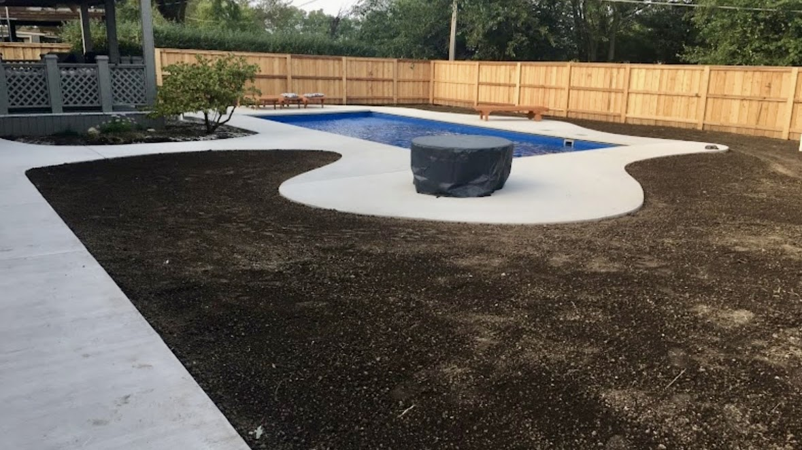

ROOTED IN AURORA, ILLINOIS
Made for living.
Built for outside.
Landscape construction and outdoor transformations.
Thoughtfully crafted in Aurora, Illinois.
Over a decade of craftsmanship.
One yard at a time.

01 / SELECTED WORK
A better life,
right outside.
Real spaces, made with care.
Take a closer look at the details.
02 / OUR EXPERTISE
From the ground up.
Down to the details.
From the first impression to your favorite backyard corner, we bring care and craftsmanship to your outdoor space.
Landscapes
with character.
Planting, garden beds and thoughtfully finished spaces that feel at home around your house.
LANDSCAPING ↗02Built for
everyday living.
Patios, walkways and garden walls that create room to gather, unwind and enjoy the outdoors.
HARDSCAPES ↗03A fresh start
for your yard.
Soil preparation and sod installation to turn bare ground into a greener place to spend your days.
LAWN TRANSFORMATIONS ↗A FRESH PERSPECTIVE
Same backyard.
A whole new feeling.
A little vision can change everything. See how fresh sod brings this outdoor space to life.
← DRAG TO SEE THE TRANSFORMATION →


 CRAFTED WITH CARE. ENJOYED FOR YEARS.
CRAFTED WITH CARE. ENJOYED FOR YEARS.03 / THE PEOPLE BEHIND THE WORK
Your yard deserves
someone who cares.
For over a decade, Lupita Landscaping has been transforming outdoor spaces with quality materials and careful workmanship.
We believe the best projects start with listening. Whether you’re imagining a new patio or a fresh start for your lawn, talk with Rocky about what you have in mind.
Start a conversation ↗LET’S MAKE SOMETHING BEAUTIFUL
Your next chapter
starts outside.
Tell us about your space, your ideas and what you’d love to change. We’ll take it from there.
(630) 666-3853 ↗rodriguez.rocky1991@ymail.com ↗BASED IN AURORA, ILLINOIS